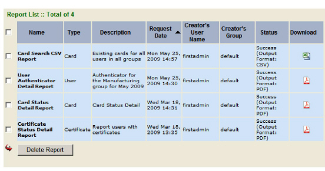
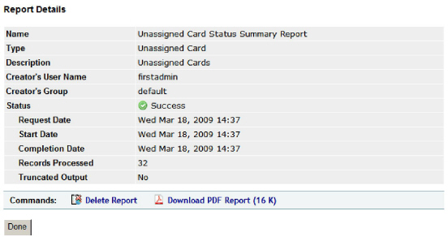

|
IdentityGuard Server 11.0 Administration Guide |
|
IdentityGuard Server 11.0 Administration Guide |
While reports are being generated, you can see the list of reports in the queue, and you can see information about the report as it is being processed.
After the report has been generated and the output is available, you can view the report and the report information for each report.
The reports you are allowed to view depends on your permissions. You can view the reports you generated, assuming you have the reportView permission, but you may not be able to view reports generated by other administrators. Administrators with the superuser role can view all existing reports.
For more information, see Report permissions.
Note: You can view reports only from the same instance of Entrust IdentityGuard that created the report, unless the Entrust IdentityGuard instances share a common file system.
You can view only reports in the queue that are running in the same Entrust IdentityGuard process. The Administration interface and the Master user shell are two different processes, so you cannot view queued reports across this boundary. For example, if you start a report from the Master user shell, you cannot see this report in the Administration interface while it is in the queue.
After the report is created, you can view the report and the report information from either location, regardless of where the report generation was initiated.
To view reports in the Administration interface
1. Log in to the Entrust IdentityGuard Administration interface as the administrator.
 On the
Windows computer where Entrust IdentityGuard is installed
On the
Windows computer where Entrust IdentityGuard is installed
2. Click Reports.
3. Click List Reports.
The Report List window appears.

The Report List screen shows all of the reports you have generated. It may also show some or all of the reports that have been generated by other administrators, depending on your permissions.
The fields on the report list are as follows:
● Name — the report display name as defined when the report template was created. Click the report name to display the report details, and to open and display the report.
● Type — the name of the data source.
● Description — the report description entered when the report generation request was made.
● Request Date — the date and time of the report generation request.
● Creator’s User Name — the Entrust IdentityGuard user name of the administrator or master user who launched the report.
● Creator’s Group — the Entrust IdentityGuard group of the administrator who requested the report. If the report was requested by a master user, the group field is blank.
● Status — the current status of the report. The possible states are:
– Queued: The report is in the queue, but processing has not yet begun. You can delete the report if you change your mind while it is in the queued state. The report’s position in the queue is displayed as well.
– Working: Data is being gathered. You also see the number of records that have been processed so far, or whether processing has moved from the data acquisition state to the report output stage.
– Generating output: The report is being generated.
– Success: The report is complete and ready to view. Also displayed is the output format of the report; either PDF or CSV.
– Failure: The report generation failed. The error number is shown and you can find out why the report failed by opening the report details page and clicking the error field.
– Missing: The report information file exists, but the report no longer exists in the file system.
● Download — shows whether there is a report that can be viewed from the Administration interface.
– If there is a PDF report available, click the Adobe icon to display the report in a PDF viewer.
– If there is a CSV file available, click the Microsoft icon to save the report file to your computer.
Note: If you use an application other than Microsoft Excel® to view CSV files, clicking the icon displays the report in the available viewer.
4. Use the Refresh List button to refresh the status of the reports shown in the list.
5. To see the report information, click the report name.
The Report Details screen appears, and displays the report information.

6. To view the report:
● If the report output is in PDF format, click Download PDF Report.
● If the report output is in CSV format, click Download CSV Report.
7. Respond to the dialog box that asks whether you want to open or save the file.